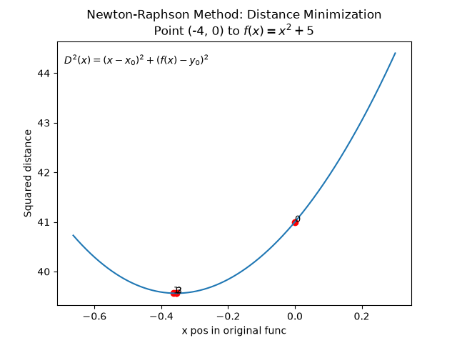
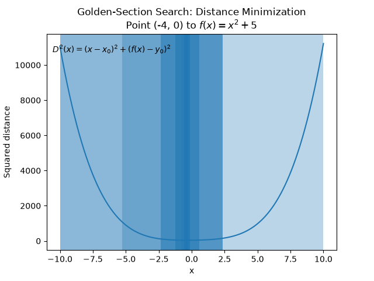
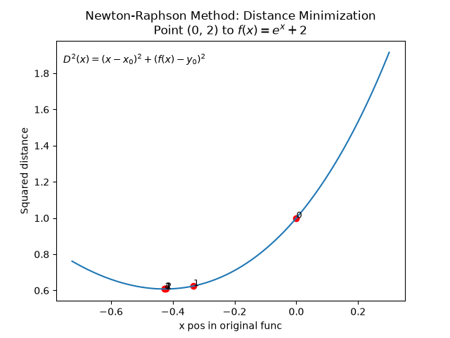
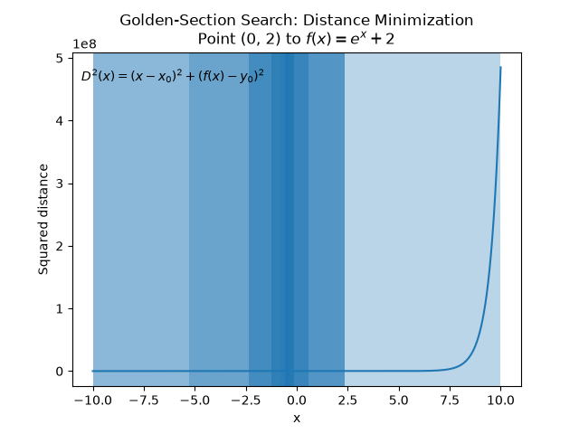
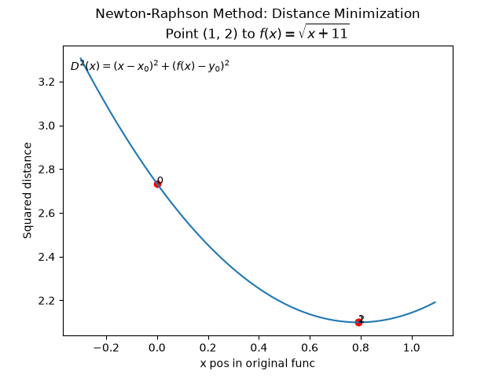
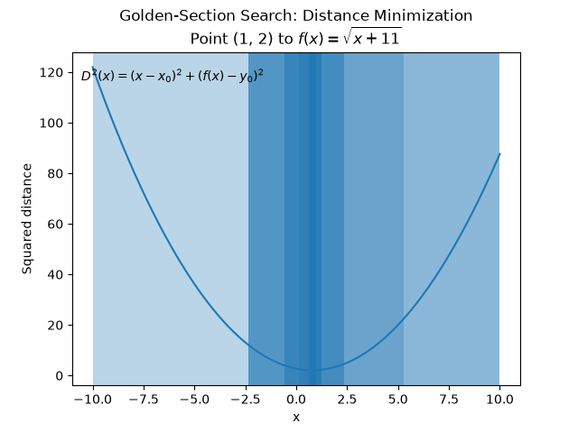
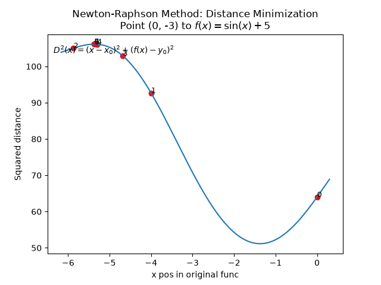
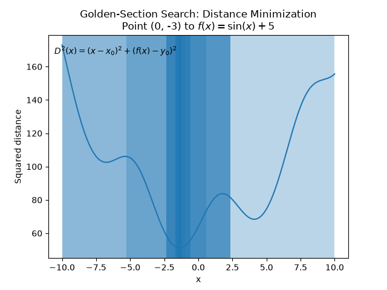
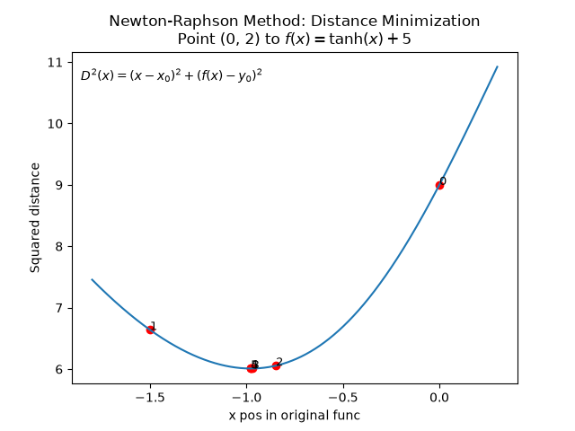
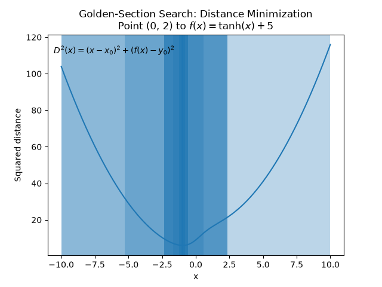

This assignment investigates the shortest distance between a point (x₀, y₀) and a nonlinear function f(x). Two numerical optimization methods are used: Newton-Raphson and Golden-Section Search.
For a point (x₀, y₀) and a function f(x), a point on the function can be written as:
The squared Euclidean distance between these two points is:
Minimizing the squared distance is equivalent to minimizing the actual distance because the square root is a monotonically increasing function. Therefore, the optimization problem can be solved by finding the value of x that minimizes D²(x).
Newton-Raphson finds a stationary point of the squared-distance function by using its first and second derivatives.
The algorithm starts from an initial guess and repeatedly updates x using the equation above. The process stops when the change in x or the change in the objective function becomes sufficiently small.
Newton-Raphson is a local optimization method. This means that its result can depend on the initial guess. Importantly, solving D²'(x) = 0 only tells us that a stationary point has been found; that stationary point can be either a minimum or a maximum.
Golden-Section Search is a derivative-free optimization method used to find the minimum of a function within a bounded interval. In this assignment, the function being minimized is:
The method begins with an interval [a, b] that contains the minimum. Two points inside the interval are selected using the golden ratio:
The squared distance is evaluated at both points. The two values are compared to determine which part of the interval can be discarded.
This process is repeated, progressively reducing the size of the interval. The algorithm stops when the interval becomes smaller than the specified tolerance.
Unlike Newton-Raphson, Golden-Section Search does not require the first or second derivative of the function. It only requires evaluations of the function itself.
This makes it useful when derivatives are difficult to calculate or when Newton-Raphson is sensitive to its initial guess. Because Golden-Section Search operates within a bounded interval, it provides a systematic way of narrowing the search toward a minimum.










Therefore, the two methods approach the same distance-minimization problem differently. Newton-Raphson uses local derivative information to move toward a stationary point, while Golden-Section Search uses function values to progressively reduce a bounded search interval.
```